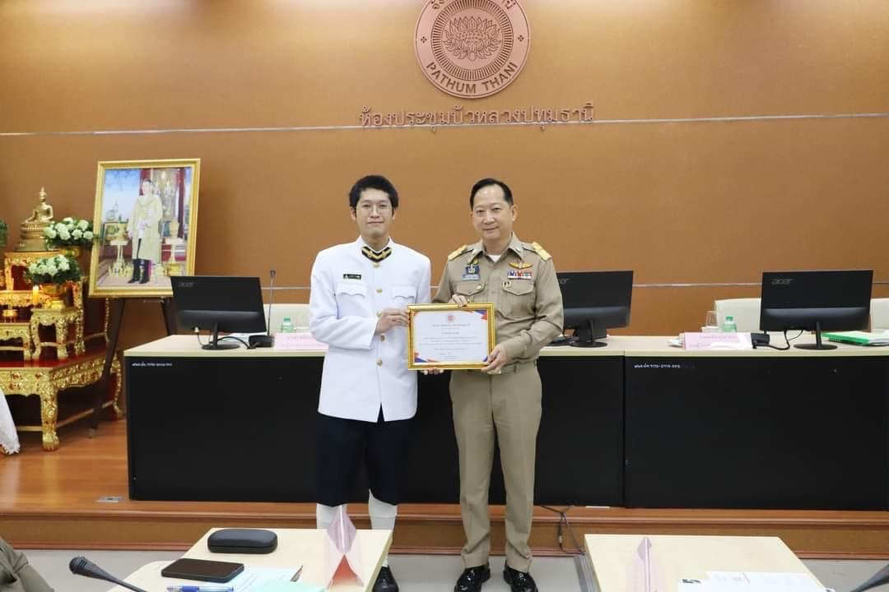
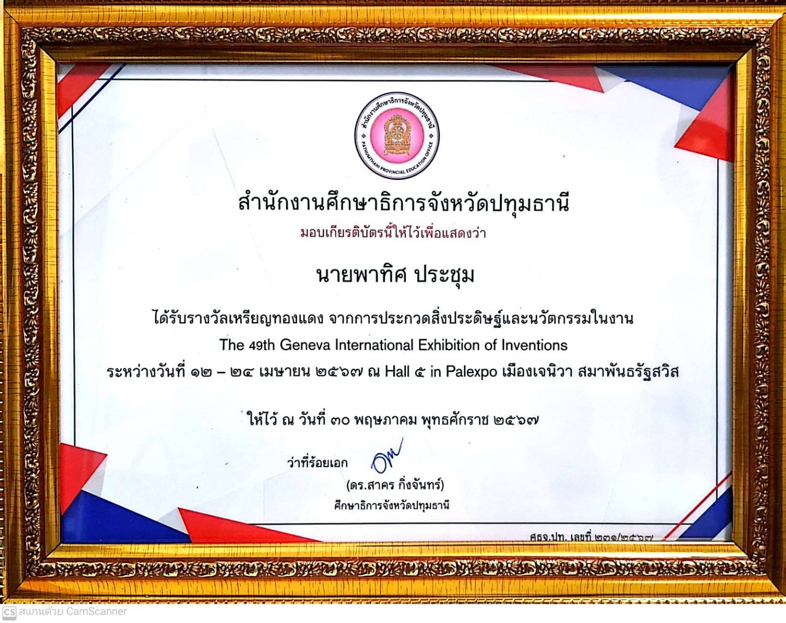
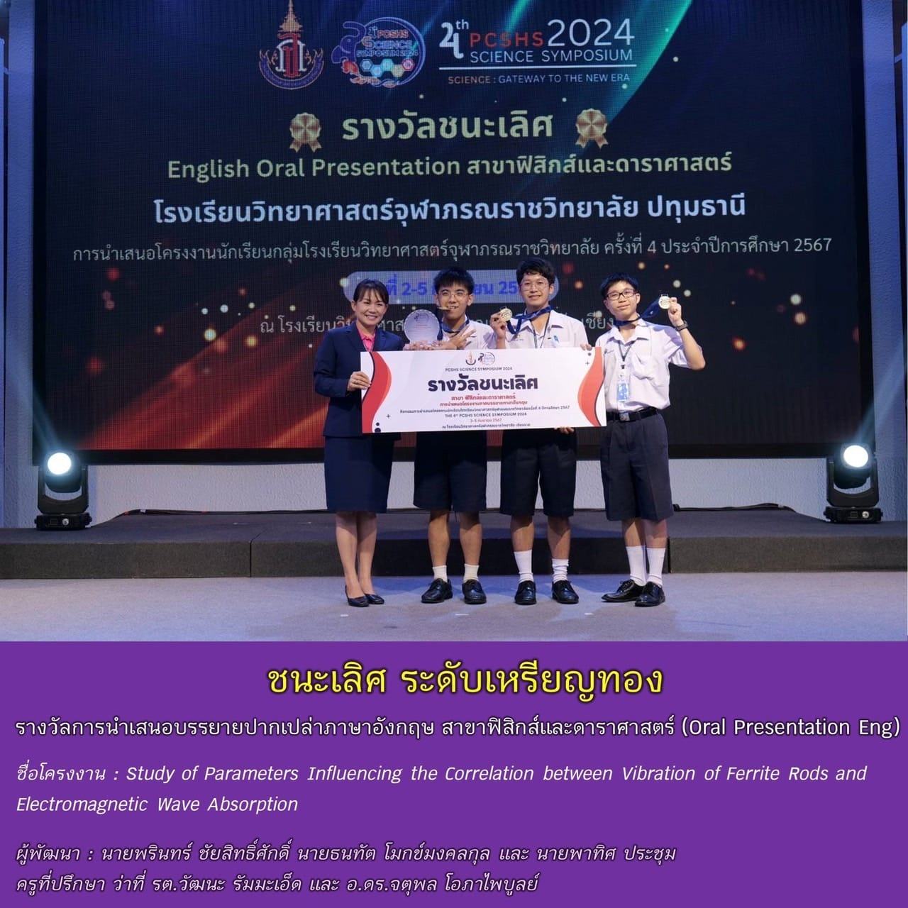
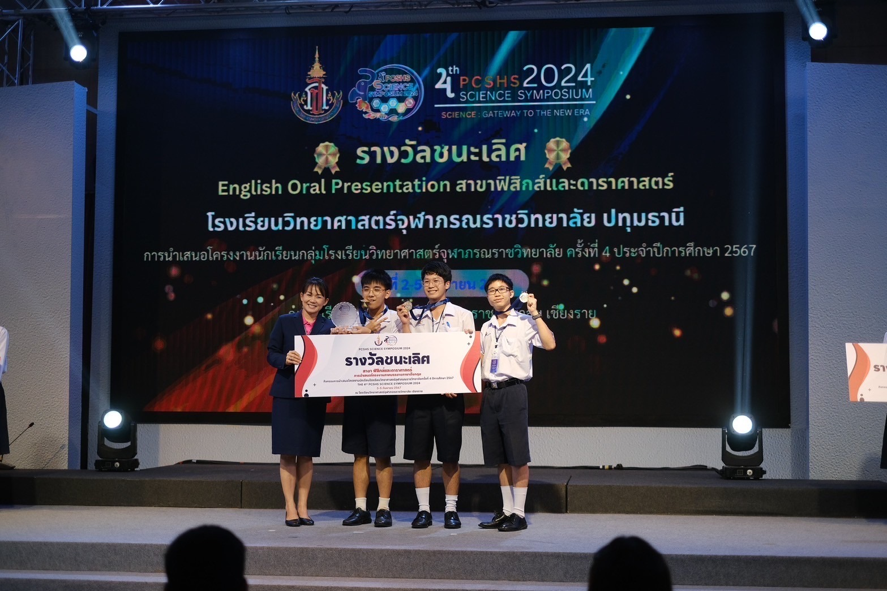
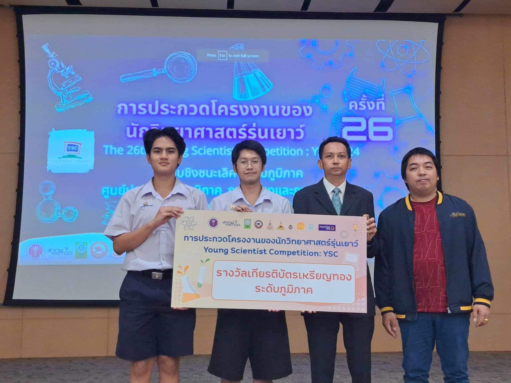
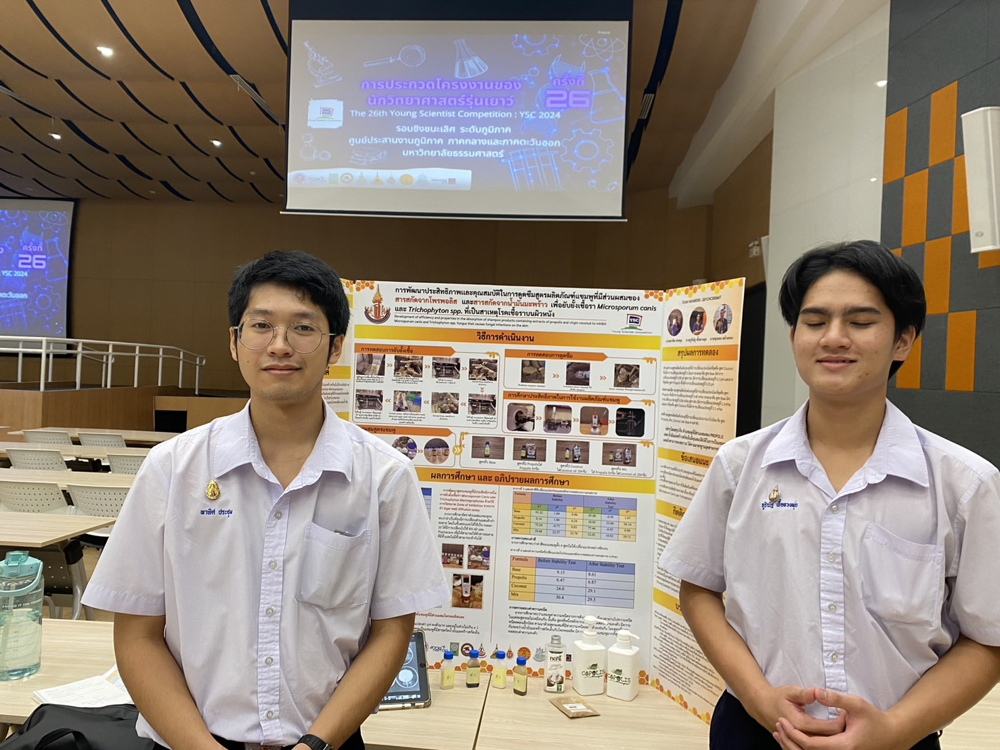
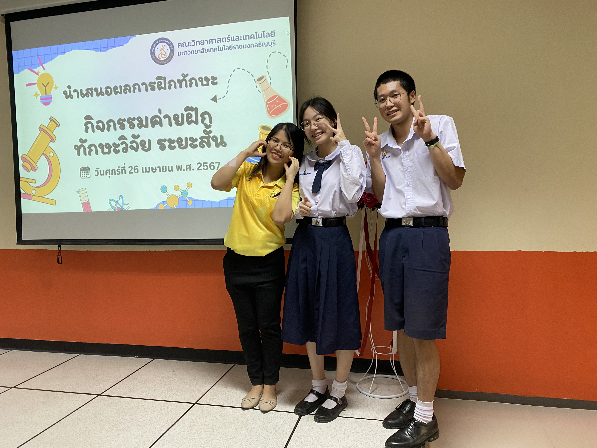
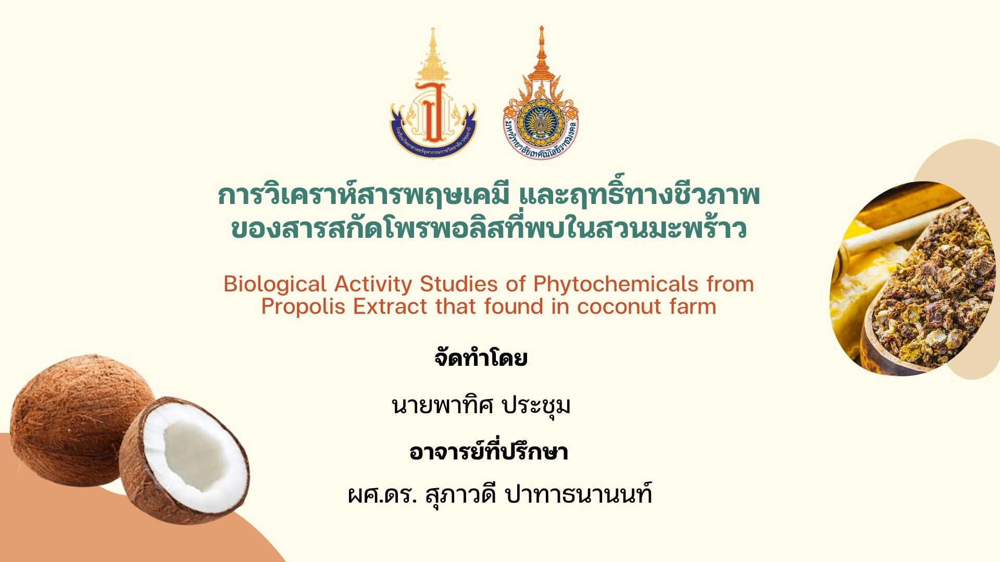
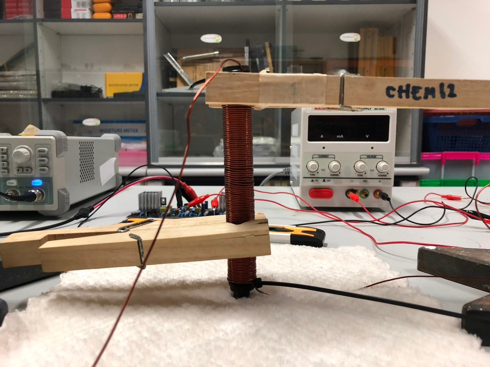
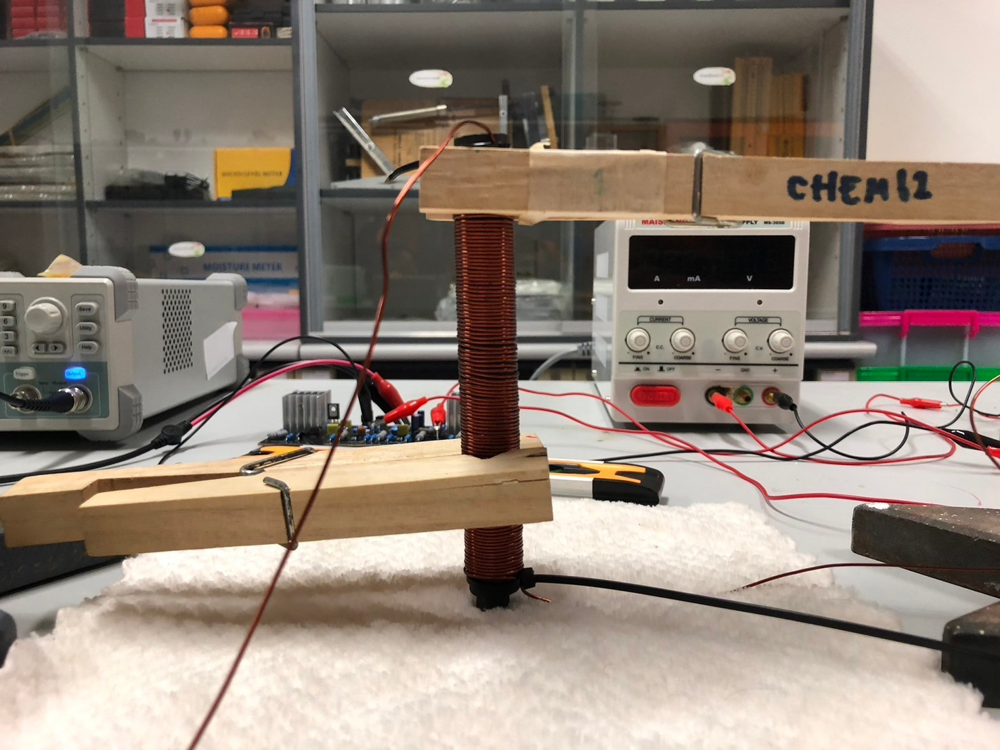

My Rewards
-
The 49th Geneva International Exhibition of Inventions
"Received Bronze medal in COPOLIS-SHAMPOO Innovation"
  -
4th PCSHS SCIENCE SYMPOSIUM 2024
"Received the First Place Gold Medal in the 4th PCSHS Science Symposium 2024 in the field of Physics and Astronomy, with the project titled 'Study of Parameters Affecting the Relationship between the Oscillation of Ferrite Rods and the Absorption of Electromagnetic Interference.'"
  -
Youth Science Competition 2024
"Received the Regional Gold Medal and a grant of 3,000 Baht at the Youth Science Competition 2024 on Sunday, March 3rd, in Chemistry, for the project titled 'Development of Absorption Efficiency and Properties of a Shampoo Formula Containing Propolis Extract and Coconut Oil Extract to Inhibit Trichophyton spp., the Cause of Skin Fungal Infections.'"
 
My Research
-
Renewable Energy using Electronic Circuits
A research project focused on creating efficient energy systems using solar cells and advanced electronic circuits.
  -
AI in Basketball Performance Analysis
Explored the use of AI to analyze player performance and provide insights for training improvements.
 

-
Sustainable Agriculture Technology
Developed methods to reduce water usage in farming by using smart sensors and IoT technologies.